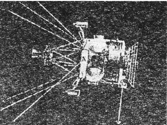

Космонавты идут на абордаж
Этот проект родился на волне той эйфории, которая царила в советской космонавтике после полета человека в космос. По окончании «совместного полета» «Востока-3» и «Востока-4», когда корабли, не имеющие возможности маневра, за счет точности запуска удалось свести на расстояние до 5 км, Научно-техническая комиссия Генштаба сделала вывод: «Человек способен выполнять в космосе все военные задачи, аналогичные задачам авиации (разведка, перехват, удар). Корабли „Восток“ можно приспособить к разведке, а для перехвата и удара необходимо срочно создавать новые, более совершенные космические корабли».
КОСМИЧЕСКИЙ ПЕРЕХВАТЧИК. И такие корабли стали разрабатываться. Так, на основе пилотируемого орбитального корабля 7К-ОК («Союз») планировалось создать космический перехватчик 7К-П («Союз-П»).
Поначалу проектом занималось ОКБ-1, но в 1964 году из-за перегруженности «королевского хозяйства» другими заказами все материалы по «Союзу-П» были переданы в филиал № 3 ОКБ-1 при куйбышевском авиазаводе «Прогресс». Начальником филиала в то время был конструктор Дмитрий Козлов.
Поначалу полагали, что «Союз-П» будет обеспечивать лишь сближение корабля с вражеским космическим объектом и выход космонавтов в открытый космос с целью его обследования. Затем, в зависимости от результатов инспекции, космонавты должны были либо вывести объект из строя, либо снять его с орбиты, поместив в контейнер своего корабля.
Однако по здравому размышлению от такого опасного для космонавтов проекта отказались. Дело в том, что в то время практически все советские спутники снабжались аварийной системой подрыва. Вполне логичным было предположить, что подобные меры безопасности предпримет и потенциальный противник. Так что космонавты вполне могли бы стать жертвами мин-ловушек. Поэтому от инспекции пришлось отказаться. Но сам проект создания пилотируемого космического перехватчика продолжал развиваться.
СОВЕРШЕНСТВУ НЕТ ПРЕДЕЛА. В рамках обновленного проекта предполагалось создать корабль «Союз-ППК» («Пилотируемый перехватчик»), оснащенный восьмью небольшими ракетами. Теперь космонавты, приблизившись к космическому аппарату противника, должны были на взгляд оценить его предназначение и в случае необходимости могли расстрелять с помощью бортовых мини-ракет.
Кроме корабля-перехвагчика «Союз-П», в филиале № 3 разрабатывались военные корабли «Союз-ВИ» («Военный исследователь») и «Союз-P» («Разведчик»). Впрочем, вскоре все варианты были слиты воедино в проекте универсального военного корабля, который мог бы осуществлять визуальную разведку, фоторазведку, совершать маневры для сближения и уничтожения космических аппаратов потенциального противника.

Аппарат «Полет-1» («Истребитель спутников»).
Новый космический корабль 7К-ВИ с экипажем из двух человек имел полную массу 6,6 т и мог работать на орбите в течение трех суток. Однако, поскольку ракета-носитель «Союз» могла вывести на расчетную орбиту только 6,3 т полезного груза, пришлось подвергнуть модернизации как сам корабль с целью его облегчения, так и ракету, увеличив ее стартовую мощность.
В итоге появился проект нового комплекса. Он был одобрен правительством. Испытания «Союза-ВИ» были намечены на конец 1968-го или начало 1969 года.
В отличие от других модификаций «Союза» места военного экипажа располагались не в ряд, а друг за другом. Это позволило разместить приборы контроля и управления по боковым стенам капсулы. Кроме того, на спускаемом аппарате находилась безоткатная пушка Нудельмана, разработанная специально для стрельбы в вакууме. Испытания на стенде доказали, что космонавт мог бы нацеливать космический корабль и пушку с минимальным расходом топлива.
В орбитальном модуле имелись также различные приборы для наблюдения за Землей и околоземным пространством — телескопы и бинокли, радары, фотоаппараты… На внешней подвеске орбитального модуля были закреплены штанги с пеленгаторами, предназначенными для поиска вражеских объектов.
Еще одним новшеством, примененным на «Союзе-ВИ», стала энергоустановка на базе изотопного реактора. Дело в том, что привычные солнечные батареи, по мнению военных, делали корабль чересчур уж уязвимым.
В случае надобности «Союз-ВИ» предполагали также оснастить стыковочным узлом, позволяющим осуществлять стыковку с военной орбитальной станцией «Алмаз», рассказ о которой у нас еще впереди.
В сентябре 1966 года была сформирована группа военных космонавтов, в которую вошли: Павел Попович, Алексей Губарев, Юрий Артюхин, Владимир Гуляев, Борис Белоусов и Геннадий Колесников. Экипажи Попович-Колесников и Губарев-Белоусов должны были первыми отправиться в космос на новом корабле.
Однако тут на «Союз-ВИ» ополчились Василий Мишин и другие ведущие конструкторы ОКБ-1. Они полагали, что нет смысла создавать столь сложную и дорогую модификацию уже существующего корабля 7К-ОК («Союз»), если последний вполне способен справиться со всеми задачами, которые могут поставить перед ним военные. Оппоненты также утверждали, что нельзя распылять силы и средства, когда Советский Союз может утратить «первенство» в лунной «гонке». На самом же деле, как выяснилось позднее, москвичи просто не хотели делиться лаврами с куйбышевцами. И они добились своего: в декабре 1967 года работы по созданию военного космического корабля «Союз-ВИ» были свернуты.